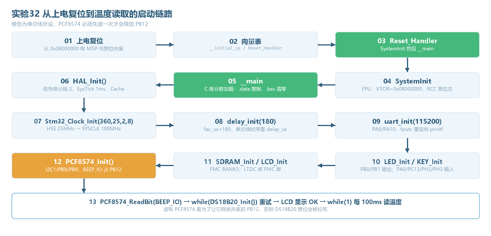
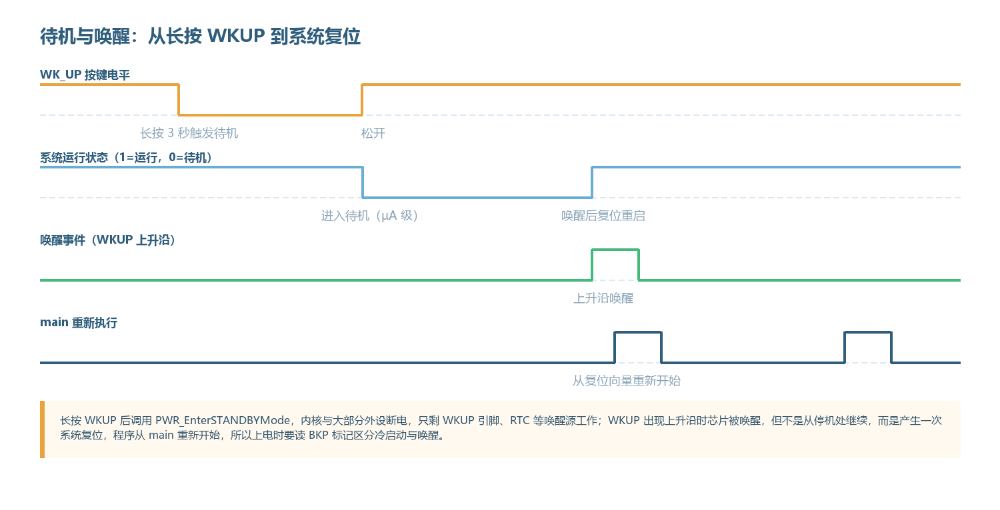
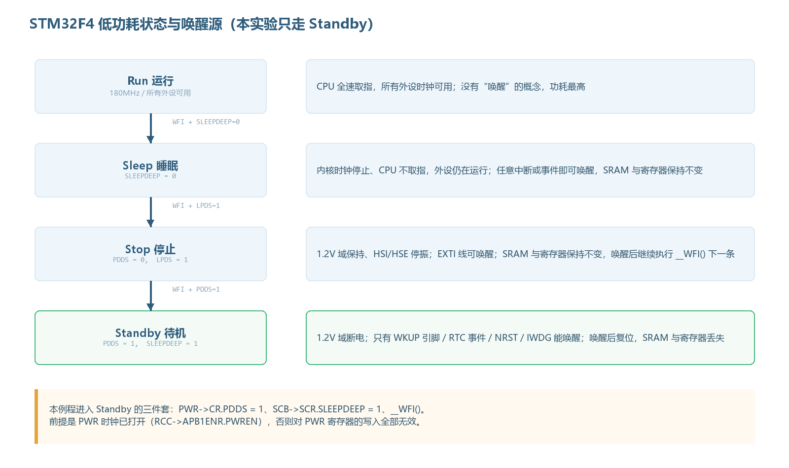
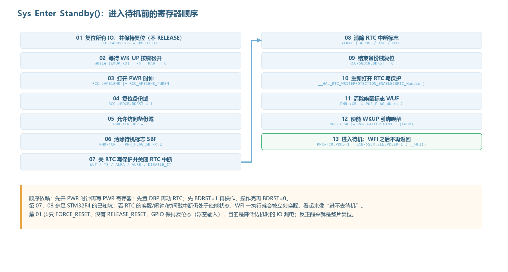
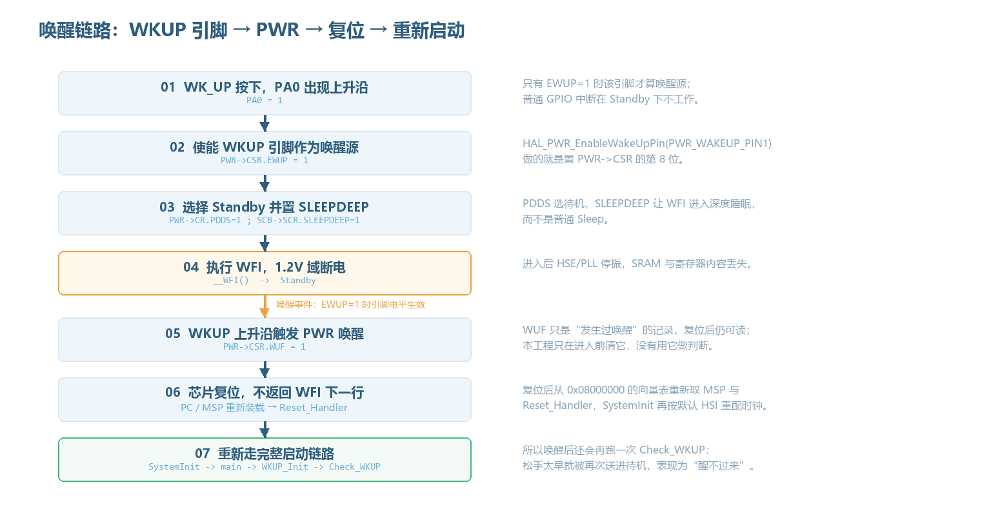
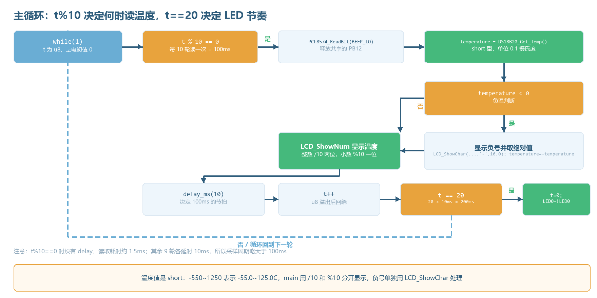

01 实验目标与硬件资源
本实验的工程名是 WKUP.uvprojx，源码目录 实验18 待机唤醒实验。目标不是新外设，而是把 PWR 的 Standby 模式 用起来：芯片进入待机后 1.2V 域断电、程序停摆，只有 WKUP 引脚等少数唤醒源能把它“叫醒”，而叫醒的实质是一次复位。
与相邻实验最大的差异：普通实验上电即运行；本实验默认是待机状态，上电后必须长按 WK_UP 才算开机。这条规则不是硬件做的，而是 WKUP_Init() 里调用 Check_WKUP() 判 3 秒长按、失败就调用 Sys_Enter_Standby() 实现的。
硬件资源（取自 readme.txt 与源码）
| 资源 | 引脚 | 在源码中的位置 | 本实验作用 |
|---|---|---|---|
| WK_UP 按键 | PA0 | key.h 中 WK_UP；wkup.h 中 WKUP_KD | 开机判定、运行期长按进入待机、待机时作为唤醒源 |
| DS0 | PB1 | led.h：#define LED0 PBout(1) | 主循环每 250ms 翻转；Check_WKUP 期间点亮 |
| DS1 | PB0 | led.h：#define LED1 PBout(0) | 仅被 LED_Init() 置高（熄灭），本实验不用 |
| 串口 1 | PA9 / PA10 | usart.c：HAL_UART_MspInit | 115200-8-N-1；printf 重定向（LCD_Init 内部会用到） |
| LCD | FMC / LTDC | lcd.c、ltdc.c、sdram.c | 显示五行固定字符，非本实验重点 |
KEY_Init()（普通下拉输入）和 WKUP_Init()（EXTI 上升沿 + 下拉）配置，后执行的 WKUP_Init() 覆盖前者。所以 KEY_Scan() 里的 WK_UP 在本工程中实际不再是普通输入语义。02 目录与文件分工
| 目录 / 文件 | 负责什么 | 本页看哪几处 |
|---|---|---|
CORE/startup_stm32f429xx.s | 栈堆定义、向量表、Reset_Handler | 04 节：Stack_Size 0x400、__Vectors、BLX SystemInit、BX __main |
USER/system_stm32f4xx.c | SystemInit()：FPU、RCC 复位到默认态、SCB->VTOR | 05 节 |
USER/main.c | 初始化顺序与 while(1) | 03 节全文、12 节主循环 |
USER/stm32f4xx_it.c | SysTick_Handler → HAL_IncTick()（HAL 时基 1ms） | 05 节 |
HALLIB/.../stm32f4xx_hal.c | HAL_Init()、弱函数 HAL_InitTick、HAL_MspInit | 05 节 |
HALLIB/.../stm32f4xx_hal_pwr.c | HAL_PWR_EnterSTANDBYMode、EnableWakeUpPin、EnableBkUpAccess | 09、10 节 |
SYSTEM/sys/sys.c | Stm32_Clock_Init；位带宏；WFI_SET（本工程未调用） | 06 节 |
SYSTEM/delay/delay.c | delay_init(180)、delay_ms（SysTick 轮询，非中断） | 06 节 |
SYSTEM/usart/usart.c | uart_init(115200)、fputc 重定向 | 06 节 |
HARDWARE/WKUP/wkup.c / wkup.h | WKUP_Init、Check_WKUP、Sys_Enter_Standby、EXTI0_IRQHandler、HAL_GPIO_EXTI_Callback | 08、09、11 节（核心） |
HARDWARE/KEY/key.c / led.c | 按键与 LED 的 GPIO 初始化 | 08 节（PA0 冲突）、12 节 |
HARDWARE/RTC/rtc.c | 定义 RTC_HandleTypeDef RTC_Handler 及 RTC 初始化 | 09 节：只用到句柄，main 未调用 RTC_Init() |
HARDWARE/LCD、HARDWARE/SDRAM | 显示与外部内存，与本实验逻辑无关 | 仅占启动时间 |
Keil 工程 WKUP.uvprojx 的 HARDWARE 组里同时包含了 led.c、key.c、lcd.c、sdram.c、ltdc.c、rtc.c、wkup.c；HALLIB 组包含 stm32f4xx_hal_pwr.c、stm32f4xx_hal_pwr_ex.c、stm32f4xx_hal_rtc.c、stm32f4xx_hal_rtc_ex.c，所以 wkup.c 里对 RTC 句柄与 PWR 的调用都能链接通过。
HAL_Init、HAL_InitTick、HAL_RCC_ClockConfig、HAL_PWR_EnterSTANDBYMode、HAL_GPIO_EXTI_IRQHandler 五处。RTC 的 HAL 函数只讲“被调用了什么”，不展开其实现。03 启动流程总览


进入待机后内核与大部分外设断电，只剩 WKUP 引脚、RTC 等唤醒源在工作；WKUP 上升沿唤醒芯片时不会接着原处执行，而是产生一次系统复位，程序从 main 重新跑。这正是要用 BKP 标记区分冷启动与唤醒的原因。
读这张图要注意一点：右侧 05~08 与左侧 01~04 不是并列的两条路，而是首尾相接的环形。上电走 01→04，main 里调 WKUP_Init 进入 05，判定通过才继续到 06 的 while(1)；运行期长按触发 07，Sys_Enter_Standby 走到 08 停在 WFI；WKUP 唤醒后芯片复位，回到 01。
main 函数全文（USER/main.c，未删改）
int main(void) // 程序入口：复位后经 __main 调用 { HAL_Init(); // 初始化HAL库：优先级分组2 + 1ms 时基（此时还是 HSI 16MHz） Stm32_Clock_Init(360,25,2,8); // 设置时钟,180Mhz：HSE 25M × 360/25 = 360M VCO，/2 = 180M delay_init(180); // 初始化延时函数：fac_us = 180 uart_init(115200); // 初始化USART：PA9/PA10，115200-8-N-1 LED_Init(); // 初始化LED：PB0/PB1 推挽输出并置高（全灭） KEY_Init(); // 初始化按键：PA0 下拉输入、PC13 上拉、PH2/PH3 上拉 WKUP_Init(); // 待机唤醒初始化：PA0 改 EXTI 上升沿，并做“是否开机”判定 SDRAM_Init(); // 初始化SDRAM：LCD 显存用 LCD_Init(); // 初始化LCD：内部会 printf，所以必须放在 uart_init 之后 POINT_COLOR=RED; // 以下为 LCD 五行固定字符串，与本实验逻辑无关 LCD_ShowString(30,50,200,16,16,"Apollos STM32F4/F7"); // LCD 第 1 行：开发板型号 LCD_ShowString(30,70,200,16,16,"WKUP TEST"); // LCD 第 2 行：实验名称 LCD_ShowString(30,90,200,16,16,"ATOM@ALIENTEK"); // LCD 第 3 行：作者标识 LCD_ShowString(30,110,200,16,16,"2016/1/27"); // LCD 第 4 行：日期 LCD_ShowString(30,130,200,16,16,"WK_UP:Stanby/WK_UP"); // LCD 第 5 行：按键功能提示 while(1) // 主循环：只做 DS0 闪烁，按键逻辑全在中断里 { LED0=!LED0; // DS0 翻转（PB1 位带写 ODR） delay_ms(250); // 延时250ms：亮 250ms + 灭 250ms，周期 500ms } }
- HAL_Init 必须在最前：它建立 1ms 时基（SysTick）与 NVIC 优先级分组 2。后面的
HAL_RCC_OscConfig、HAL_RCC_ClockConfig里都用HAL_GetTick()做超时等待，没有时基就会卡在超时判断里。 - 时钟必须在 delay_init 前：
delay_init(180)把fac_us设成 180，含义是“1us 需要 180 个 HCLK 节拍”。若先延时后改频，所有延时都会按错误频率计算。 - uart_init 必须在 LCD_Init 前：readme 注意事项第 2 条写明
LCD_Init内部用到printf，而printf经fputc走 USART1；串口未初始化会死等在while((USART1->SR&0X40)==0)。 - WKUP_Init 放在 LED_Init/KEY_Init 之后：
Check_WKUP里要操作LED0做指示，PA0 的 EXTI 配置又要覆盖KEY_Init的普通输入配置，所以必须排在两者后面。 - WKUP_Init 是一个“隐藏关卡”：它内部可能直接调用
Sys_Enter_Standby()，也就是说 main 有可能永远走不到SDRAM_Init。第 08 节展开。 - 顺序反例：把
WKUP_Init放到LCD_Init之后，上电不按键会先闪一下屏幕再进待机——功能没错，但现象会误导。
KEY_Scan()、没有 RTC_Init()。按键长按并不在主循环里轮询，而是在 EXTI0 中断里阻塞判断——这是本实验最容易被误读的一处。04 启动文件与向量表
启动文件是 CORE/startup_stm32f429xx.s（MDK-ARM 语法，文件头注明 V1.3.2 / 2015-11-13）。它先定义栈和堆，再把向量表放在 .isr_vector 段，最后给出 Reset_Handler。
Stack_Size EQU 0x400; ; 栈 1024 字节：MSP 从这里向下生长 AREA STACK, NOINIT, READWRITE, ALIGN=3 ; 定义 STACK 段：未初始化、可读写、8 字节对齐 Stack_Mem SPACE Stack_Size ; 分配 Stack_Size 字节的栈空间 __initial_sp ; 这个标号的地址 = 栈顶，会被填进向量表第 0 项 Heap_Size EQU 0x200; ; 堆 512 字节：只给 malloc 用，本工程未用 malloc AREA HEAP, NOINIT, READWRITE, ALIGN=3 ; 定义 HEAP 段：与 STACK 段属性相同 __heap_base ; 堆起始地址标号 Heap_Mem SPACE Heap_Size ; 分配 Heap_Size 字节的堆空间 __heap_limit ; 堆结束地址标号，链接器据此检查堆是否溢出
- Stack_Size = 0x400（1KB）是本工程的栈上限。
LCD_Init、SDRAM_Init调用链较深，加上中断嵌套（EXTI0 抢占 2 高于 SysTick 抢占 3），栈不够会直接进 HardFault。 __initial_sp的地址由链接器算出（栈底 + Stack_Size），并作为向量表第 0 项写入 Flash。复位时硬件自动把它装载到 MSP，软件无需也不能修改。- Heap_Size = 0x200（512B）仅供
malloc使用。本工程未调用任何动态分配，堆实际为空，设为 0 也能运行，但保留默认值不影响。 AREA ... ALIGN=3表示 8 字节对齐，这是 Cortex-M4 对栈的硬性要求（LDRD/STRD 等指令需要 8 字节对齐）。
上面只截取了栈/堆定义段，省略了文件头的版权注释和 Configuration Wizard 的 <h>/<o> 说明行。
PRESERVE8 ; 声明当前段 8 字节对齐（与上面 ALIGN=3 呼应） THUMB ; 声明后续指令为 Thumb 指令集（Cortex-M4 只支持 Thumb） ; Vector Table Mapped to Address 0 at Reset AREA RESET, DATA, READONLY ; 定义 RESET 段：只读数据，放向量表 EXPORT __Vectors ; 导出向量表起始标号，供链接器定位 EXPORT __Vectors_End ; 导出向量表结束标号 EXPORT __Vectors_Size ; 导出向量表大小标号 __Vectors DCD __initial_sp ; 0x00：初始 MSP（栈顶） DCD Reset_Handler ; 0x04：复位后第一条指令地址 DCD NMI_Handler ; 0x08 DCD HardFault_Handler ; 0x0C ... DCD SysTick_Handler ; 0x3C：HAL 的 1ms 时基入口 ... DCD EXTI0_IRQHandler ; PA0 上升沿走这里（本实验的按键中断） ... __Vectors_End ; 向量表结束标号 __Vectors_Size EQU __Vectors_End - __Vectors ; 向量表字节数 = 结束地址 - 起始地址
- 前两项决定复位后的初始状态：第 0 项给 MSP（栈顶），第 1 项给 PC（
Reset_Handler地址）。这两个值由硬件在复位序列中自动装载，不经过任何代码。 __Vectors放在RESET段，链接脚本会把它定位到 Flash 起始 0x08000000，这样硬件从 0x00000000（别名到 0x08000000）取到的就是正确的 MSP/PC。- 所有异常/中断入口都是弱符号（启动文件里用
[WEAK]导出的Default_Handler）。用户定义同名强符号（如EXTI0_IRQHandler）即可覆盖，否则进默认死循环。 - 本实验只关心
SysTick_Handler（HAL 时基）与EXTI0_IRQHandler（PA0 按键）。两者都在工程中有强符号实现，其余中断若被误触发会落入Default_Handler的死循环。
向量表省略了 0x10~0x38 的 SVC/DebugMon/PendSV 以及 0x40 之后各外设中断项，只保留与本实验相关的 SysTick 与 EXTI0。
; Reset handler Reset_Handler PROC ; 复位处理函数定义开始 EXPORT Reset_Handler [WEAK] ; 弱导出：用户可重写，否则用此默认实现 IMPORT SystemInit ; 引用外部符号 SystemInit（C 函数） IMPORT __main ; 引用 C 库入口 __main LDR R0, =SystemInit ; 取 SystemInit 的地址（USER/system_stm32f4xx.c） BLX R0 ; 带状态切换的调用：进入 C 世界，先跑 SystemInit LDR R0, =__main ; 注意是 __main，不是 main BX R0 ; 交给 C 库启动代码：建栈帧、清 bss、初始化 data，再调 main ENDP
- MSP 来自向量表第 0 项，不是代码里现算的。所以
Stack_Size 0x400一旦不够，最先遭殃的是中断嵌套与LCD_Init这类深调用，表现为 HardFault 而不是编译错误。 - 硬件不会调用 main。Cortex-M4 复位后从
Reset_Handler开始，必须由__main（C 库）完成.data搬运与.bss清零，否则所有初值非 0 的全局变量都是垃圾值。 - SystemInit 先于 __main：此时
.data/.bss还没初始化，所以SystemInit里不能依赖任何带初值的全局变量，只能直接写寄存器（它的实现正是如此）。 - EXTI0_IRQHandler 必须在向量表里有名字：
wkup.c定义的EXTI0_IRQHandler与启动文件里的弱符号同名，链接时强符号覆盖弱符号，中断才能进到自己的函数。 - SysTick 与 EXTI0 都是可屏蔽中断，而 Standby 唤醒不经过向量表——WKUP 唤醒是复位，不是中断返回。这一点在第 10 节会再次对照。
main 之前的 .data 搬运、.bss 清零与栈初始化都由 __main 完成；工程中没有用户自己写的启动代码，除了 SystemInit 之外启动链路全部由库与启动文件提供。05 SystemInit 与 HAL_Init
SystemInit：只复位，不配置 180MHz
void SystemInit(void) // 复位后最先执行的 C 函数：把时钟与向量表退回复位默认态 { #if (__FPU_PRESENT == 1) && (__FPU_USED == 1) // 仅当使用了 FPU 时才打开协处理器访问 SCB->CPACR |= ((3UL << 10*2)|(3UL << 11*2)); /* CP10/CP11 全访问：打开硬件 FPU */ #endif // 结束 FPU 条件编译块 RCC->CR |= (uint32_t)0x00000001; /* 置 HSION：先保证有 16MHz 内部时钟可跑 */ RCC->CFGR = 0x00000000; /* 清 CFGR：SW=HSI、不分频、无 MCO */ RCC->CR &= (uint32_t)0xFEF6FFFF; /* 清 HSEON / CSSON / PLLON */ RCC->PLLCFGR = 0x24003010; /* PLLCFGR 复位值：PLLM=16、PLLN=192、PLLP=2 */ RCC->CR &= (uint32_t)0xFFFBFFFF; /* 清 HSEBYP：外部晶振非旁路模式 */ RCC->CIR = 0x00000000; /* 关闭所有 RCC 中断 */ SCB->VTOR = FLASH_BASE | VECT_TAB_OFFSET; /* VECT_TAB_OFFSET = 0x00，向量表仍在 0x08000000 */ }
- 此时 .data/.bss 尚未初始化（
__main还没跑），所以SystemInit只能直接写寄存器，不能读写任何带初值的全局变量。这也是它不调用任何 HAL 函数、只操作RCC/SCB的原因。 - 执行完后系统运行在 HSI 16MHz：HSE、PLL、CSS 全部关闭，SYSCLK 切回 HSI，所有 RCC 中断关闭。这保证后续
HAL_Init→Stm32_Clock_Init从一个干净的时钟状态开始配置 180MHz。 SCB->VTOR把向量表重定位到FLASH_BASE | VECT_TAB_OFFSET。本工程VECT_TAB_OFFSET = 0，所以向量表仍在 0x08000000，与启动文件的__Vectors地址一致。- FPU 的开启条件是
__FPU_PRESENT && __FPU_USED，本工程使用了浮点运算（LCD、printf 等），所以CPACR的 CP10/CP11 会被置 3，否则浮点指令会触发 UsageFault。
该函数省略了 DATA_IN_ExtSRAM/DATA_IN_ExtSDRAM 分支（本工程未定义这两个宏，SystemInit_ExtMemCtl() 不会编译进来）。所以 SystemInit 结束时：SYSCLK = HSI 16MHz，HSE 关闭，PLL 关闭，向量表指向 Flash 起始。
HAL_Init：时基与优先级分组
HAL_StatusTypeDef HAL_Init(void) // HAL 库总入口：main 第一行调用，建立时基与中断分组 { __HAL_FLASH_INSTRUCTION_CACHE_ENABLE(); // 开 ART 指令缓存（INSTRUCTION_CACHE_ENABLE 非 0 时） __HAL_FLASH_DATA_CACHE_ENABLE(); // 开数据缓存 __HAL_FLASH_PREFETCH_BUFFER_ENABLE(); // 开预取，180MHz 下必须 HAL_NVIC_SetPriorityGrouping(NVIC_PRIORITYGROUP_2); // 优先级分组 2：2 位抢占 + 2 位子优先级 HAL_InitTick(TICK_INT_PRIORITY); // 用 SysTick 做 1ms 时基（此刻 HCLK=16MHz） HAL_MspInit(); // 弱函数，工程未重写，实际是空实现 return HAL_OK; // 返回成功状态，main 未检查此返回值 }
- Flash 缓存与预取必须在升频前打开。
FLASH_ACR的 ICEN/DCEN/PRFTEN 三位一旦置位，180MHz 下取指才不会因为 Flash 等待周期不足而跑飞。Stm32_Clock_Init里还会再设 5WS，但缓存开关由这里负责。 - 优先级分组 2意味着 4 位优先级被拆成"2 位抢占 + 2 位子优先级"。本工程所有中断（SysTick=0x0F、EXTI0=0x22）都在这个分组下解释，分组一旦在
HAL_Init设定后就不能再改。 HAL_InitTick把 SysTick 配成 1ms 中断，此时 HCLK 还是 16MHz，重装值 16000。等Stm32_Clock_Init切到 180MHz 后，HAL_RCC_ClockConfig会再次调用HAL_InitTick把重装值改成 180000。HAL_MspInit()是 HAL 的"板级初始化"弱钩子，本工程未重写，所以它是空函数。真正的引脚/时钟配置分散在各外设的XXX_MspInit里（如HAL_UART_MspInit配 PA9/PA10）。
__weak HAL_StatusTypeDef HAL_InitTick(uint32_t TickPriority) // 弱函数：用户可重写时基实现 { HAL_SYSTICK_Config(HAL_RCC_GetHCLKFreq()/1000); // 重装值 = 16000000/1000 = 16000 → 1ms HAL_NVIC_SetPriority(SysTick_IRQn, TickPriority ,0); // TICK_INT_PRIORITY = 0x0F（hal_conf.h） return HAL_OK; // 配置成功返回 } void SysTick_Handler(void) // USER/stm32f4xx_it.c { HAL_IncTick(); // 只做一件事：uwTick++，供 HAL_Delay/HAL_GetTick 使用 }
HAL_Init执行时系统还跑在 HSI 16MHz，所以 SysTick 重装值是 16000。真正把主频拉到 180MHz 的是后面的Stm32_Clock_Init。HAL_RCC_ClockConfig在切频成功后会把SystemCoreClock更新为新的 HCLK，并再次调用HAL_InitTick(TICK_INT_PRIORITY)，因此 1ms 时基不会因为改频而失真——这是 HAL 的既定行为，不是本工程额外补的代码。- SysTick 的优先级参数是
TICK_INT_PRIORITY = 0x0F，在分组 2 下等于“抢占 3 / 子 0”；而WKUP_Init给 EXTI0 的是“抢占 2 / 子 2”。EXTI0 的抢占优先级更高，所以 EXTI0 中断里 SysTick 中断进不来，uwTick会停住——这一点在 11 节会用到。 - HAL_Delay 与本工程的 delay_ms 不是一回事：前者依赖
uwTick（需要 SysTick 中断），后者直接读 SysTick 计数器（轮询）。所以在 EXTI0 中断里只能用它。 - ART 缓存与预取要在 180MHz 之前打开，否则 Flash 等待周期不足会直接跑飞；本工程的
Stm32_Clock_Init里还会再次设置FLASH->ACR的 5 个等待周期。 HAL_MspInit()在这里是弱符号空函数（HAL 库里定义，工程未重写），所以“MSP”这一层没有做任何引脚/时钟配置，别把它和启动文件的 MSP 栈指针混淆。
06 时钟、延时与串口
Stm32_Clock_Init：先把 PWR 时钟打开
void Stm32_Clock_Init(u32 plln,u32 pllm,u32 pllp,u32 pllq) // 配置系统时钟：HSE 经 PLL 输出 180MHz { HAL_StatusTypeDef ret = HAL_OK; // 保存 HAL 函数返回值，用于错误判断 RCC_OscInitTypeDef RCC_OscInitStructure; // 振荡器配置结构体：HSE/PLL 参数 RCC_ClkInitTypeDef RCC_ClkInitStructure; // 总线时钟配置结构体：SYSCLK/AHB/APB 分频 __HAL_RCC_PWR_CLK_ENABLE(); // 使能PWR时钟：后面配置调压器、以及待机都要用 __HAL_PWR_VOLTAGESCALING_CONFIG(PWR_REGULATOR_VOLTAGE_SCALE1); // 电压级别1，180MHz 必须 RCC_OscInitStructure.OscillatorType=RCC_OSCILLATORTYPE_HSE; // 时钟源为HSE RCC_OscInitStructure.HSEState=RCC_HSE_ON; // 打开HSE（25MHz 晶振） RCC_OscInitStructure.PLL.PLLState=RCC_PLL_ON; // 打开PLL RCC_OscInitStructure.PLL.PLLSource=RCC_PLLSOURCE_HSE; // PLL源 = HSE RCC_OscInitStructure.PLL.PLLM=pllm; // 25：先 /25 得到 1MHz 参考 RCC_OscInitStructure.PLL.PLLN=plln; // 360：×360 得到 360MHz VCO RCC_OscInitStructure.PLL.PLLP=pllp; // 2：/2 得到 180MHz SYSCLK RCC_OscInitStructure.PLL.PLLQ=pllq; // 8：/8 得到 45MHz（USB/SDIO/RNG） ret=HAL_RCC_OscConfig(&RCC_OscInitStructure); // 写入振荡器配置：开 HSE、配 PLL 并等待稳定 if(ret!=HAL_OK) while(1); // 失败则死循环：HSE 不起振通常是硬件问题 ret=HAL_PWREx_EnableOverDrive(); // 开启 Over-Drive，F429 跑 180MHz 的前提 if(ret!=HAL_OK) while(1); // Over-Drive 使能失败同样死循环 RCC_ClkInitStructure.SYSCLKSource=RCC_SYSCLKSOURCE_PLLCLK; // SYSCLK = PLL RCC_ClkInitStructure.AHBCLKDivider=RCC_SYSCLK_DIV1; // HCLK = 180MHz RCC_ClkInitStructure.APB1CLKDivider=RCC_HCLK_DIV4; // PCLK1 = 45MHz（上限 45） RCC_ClkInitStructure.APB2CLKDivider=RCC_HCLK_DIV2; // PCLK2 = 90MHz（上限 90） ret=HAL_RCC_ClockConfig(&RCC_ClkInitStructure,FLASH_LATENCY_5); // 5WS，同时会重设 SysTick 1ms if(ret!=HAL_OK) while(1); // 切系统时钟到 PLL 失败：死循环 }
- PWR 时钟必须先开。
VOLTAGESCALING_CONFIG与EnableOverDrive都要写PWR寄存器，APB1 上 PWR 时钟不开则写入无效。本工程在Stm32_Clock_Init与Sys_Enter_Standby中各开一次，是幂等操作。 - PLL 参数：HSE 25M / PLLM(25) = 1M 参考 → × PLLN(360) = 360M VCO → / PLLP(2) = 180M SYSCLK；PLLQ(8) 给出 45M 给 USB/SDIO/RNG。
- Over-Drive 是 F429 跑 180MHz 的硬性前提。普通电压档位（Scale1）最高只到 168MHz，必须开启 Over-Drive 模式才能稳定到 180MHz，否则
HAL_RCC_ClockConfig会返回错误。 HAL_RCC_ClockConfig最后一个参数FLASH_LATENCY_5设 5 个等待周期，与 180MHz 匹配；同时该函数内部会重新调用HAL_InitTick，把 SysTick 重装值从 16000 更新为 180000。- 三个
if(ret!=HAL_OK) while(1)是"失败即停机"的策略：时钟配置失败没有恢复路径，直接死循环等待看门狗复位或人工干预。
省略了原函数的文件头注释与 HAL_RCC_OscConfig 之后的 assert_failed 分支；函数后半段的 WFI_SET、INTX_DISABLE 等宏与本实验无关。WFI_SET() 虽然在 sys.c 里定义了，但 wkup.c 用的是 HAL 的 HAL_PWR_EnterSTANDBYMode，没有调用 WFI_SET。
| 节点 | 值 | 来源 |
|---|---|---|
| HSE | 25MHz | stm32f4xx_hal_conf.h：HSE_VALUE 25000000 |
| PLL VCO | 25M / 25 × 360 = 360MHz | Stm32_Clock_Init(360,25,2,8) |
| SYSCLK / HCLK | 180MHz / 180MHz | PLLP=2，AHB DIV1 |
| PCLK1 / PCLK2 | 45MHz / 90MHz | APB1 DIV4，APB2 DIV2 |
| Flash 等待 | 5WS | HAL_RCC_ClockConfig(..., FLASH_LATENCY_5) |
| SysTick | 180000 计数 / 1ms | HAL_InitTick 在切频后重算 |
delay_init / delay_ms：轮询 SysTick，而不是等中断
void delay_init(u8 SYSCLK) // 初始化延时模块：传入当前 HCLK（MHz） { HAL_SYSTICK_CLKSourceConfig(SYSTICK_CLKSOURCE_HCLK); // SysTick 时钟源 = HCLK（180MHz） fac_us=SYSCLK; // fac_us = 180：1us 需要 180 个 HCLK 节拍 // SYSTEM_SUPPORT_OS == 0，下面整段 OS 分支不参与编译 } void delay_us(u32 nus) // 不用 OS 时的实现 { u32 ticks; u32 told,tnow,tcnt=0; // ticks=目标节拍数；told=上次读值；tnow=本次读值；tcnt=已过节拍数 u32 reload=SysTick->LOAD; // 180000（1ms 的重装值） ticks=nus*fac_us; // 需要的节拍数 told=SysTick->VAL; // 刚进入时的递减计数器值 while(1) // 死循环轮询，直到累计节拍数达标 { tnow=SysTick->VAL; // 读当前递减计数器值（向下计数） if(tnow!=told) // 只有计数器变化时才累计，避免空转重复加 { if(tnow<told)tcnt+=told-tnow; // 未跨过重装点 else tcnt+=reload-tnow+told; // 跨过重装点，补上余量 told=tnow; // 更新上次读值，供下次比较 if(tcnt>=ticks)break; // 时间到 } }; } void delay_ms(u16 nms) // 毫秒级延时：nms 毫秒 { u32 i; // 循环计数变量 for(i=0;i<nms;i++) delay_us(1000); // 250ms = 250 次 1000us }
省略了 delay.c 里 #if SYSTEM_SUPPORT_OS 的整套 UCOS 支持代码（delay_osschedlock、OS 版 delay_us/delay_ms、OS 版 SysTick_Handler），因为 sys.h 中 SYSTEM_SUPPORT_OS 定义为 0，这些代码不参与编译。
fac_us = 180与主频强绑定：如果delay_init(180)之前没有Stm32_Clock_Init，延时会长 10 倍以上（按 16MHz 算却按 180MHz 用）。delay_us只读SysTick->VAL与SysTick->LOAD，不依赖uwTick，也不依赖 SysTick 中断。正因如此，它才能在 EXTI0 中断里被Check_WKUP调用。- 反过来，若把
delay_ms(30)换成HAL_Delay(30)：EXTI0（抢占 2）高于 SysTick（抢占 3），SysTick 中断进不来，uwTick不增，HAL_Delay会永久卡死——这是一个“看起来等价、实际死机”的改写。 - 用
SysTick->LOAD而不是写死 180000：HAL 每 1ms 重装，LOAD 就是 180000，读它可让delay_us自动适配时基。 delay_ms(250)是 250 次delay_us(1000)，每次都要重新读 VAL，因此实际会长于 250ms（多出循环开销），示波器上看到的周期略大于 500ms。
uart_init：只做 printf 的通道
void uart_init(u32 bound) // 初始化 USART1：波特率由参数 bound 传入（115200） { UART1_Handler.Instance=USART1; // USART1 UART1_Handler.Init.BaudRate=bound; // 115200 UART1_Handler.Init.WordLength=UART_WORDLENGTH_8B; // 8 位数据 UART1_Handler.Init.StopBits=UART_STOPBITS_1; // 1 停止位 UART1_Handler.Init.Parity=UART_PARITY_NONE; // 无校验 UART1_Handler.Init.HwFlowCtl=UART_HWCONTROL_NONE; // 无流控 UART1_Handler.Init.Mode=UART_MODE_TX_RX; // 收发 HAL_UART_Init(&UART1_Handler); // 内部会调 HAL_UART_MspInit 配 PA9/PA10 + AF7 }
- 115200-8-N-1 是标准串口参数：8 数据位、1 停止位、无校验、无流控。波特率由
bound传入，main调用时给 115200。 HAL_UART_Init内部会调用弱函数HAL_UART_MspInit，工程在usart.c中重写了它，完成 GPIOA 时钟使能、PA9/PA10 复用为 AF7（USART1）、以及 USART1 时钟使能。- printf 经 fputc 走 USART1：
LCD_Init内部有printf调试输出，所以uart_init必须在LCD_Init之前调用，否则fputc会死等USART1->SR.TXE。 - 本实验串口不参与待机/唤醒：进入待机前不关 USART1 时钟、不发送提示；唤醒后随复位重新初始化。因此串口助手上看到的现象就是"重新上电"。
省略了 fputc 重定向、EN_USART1_RX 接收中断相关代码。printf 走 fputc → 轮询 USART1->SR 的 TXE 位 → 写 DR，全程阻塞但不需要中断。
07 待机模式原理与 PWR 时钟

图里的关键差别在最后一列：Sleep 和 Stop 都保留 SRAM 与寄存器，唤醒后接着执行 __WFI() 下一条；Standby 断电，唤醒后没有“下一条”，芯片直接复位。这就是为什么本实验“唤醒后像重启”。
PWR 相关寄存器（本工程实际写到的位）
| 寄存器位 | 含义 | 谁会写它 |
|---|---|---|
RCC->APB1ENR.PWREN | PWR 接口时钟使能 | Stm32_Clock_Init 与 Sys_Enter_Standby 各调一次 __HAL_RCC_PWR_CLK_ENABLE() |
PWR->CR.PDDS | 1 = 进入 Standby（0 = Stop） | HAL_PWR_EnterSTANDBYMode() |
PWR->CR.CWUF | 写 1 清除唤醒标志 WUF | __HAL_PWR_CLEAR_FLAG(PWR_FLAG_WU) |
PWR->CR.CWUF（同一机制） | 清待机标志 SBF | __HAL_PWR_CLEAR_FLAG(PWR_FLAG_SB) |
PWR->CR.DBP | 1 = 允许访问 RTC/BKP 备份域 | HAL_PWR_EnableBkUpAccess() |
PWR->CSR.EWUP | 1 = 使能 WKUP 引脚唤醒 | HAL_PWR_EnableWakeUpPin(PWR_WAKEUP_PIN1) |
PWR->CSR.SBF | 1 = 本次复位来自 Standby 唤醒 | 硬件置位；本工程只清不读 |
PWR->CSR.WUF | 1 = 发生过唤醒事件 | 硬件置位；本工程只清不读 |
- PWR 时钟必须开。PWR 挂在 APB1 上，
RCC->APB1ENR.PWREN=0时对PWR->CR/CSR的写入会被总线丢弃且不报错。本工程在Stm32_Clock_Init里已经开过，Sys_Enter_Standby再开一次是幂等操作。 - PDDS = 1 且 SLEEPDEEP = 1。前者选 Standby 而不是 Stop；后者让
WFI走深度睡眠而不是普通 Sleep。两者缺一，芯片都只停在 Stop/Sleep，唤醒后会继续执行，现象完全不同。 - WUF/SBF 要先清。
PWR->CR的 CWUF 是“写 1 清零”，如果上一次的唤醒标志还挂着，会让“这次到底是不是被唤醒”无法判断，也可能影响低功耗行为。 - Standby 下 SRAM 不保持：
.data/.bss、堆栈、以及所有全局变量（含RTC_Handler结构体）都会丢失，复位后由__main重新初始化。 - 唤醒源的“资格”由硬件决定：EXTI 线、USART 接收、定时器中断在 Standby 下都不能唤醒，只有 WKUP 引脚、RTC 事件、NRST、IWDG 可以。
08 PA0 配置与开机判定
同一个 PA0，先后被配置两次
void KEY_Init(void) // HARDWARE/KEY/key.c，先执行 { __HAL_RCC_GPIOA_CLK_ENABLE(); // 开启 GPIOA 时钟（PA0 挂在 AHB1） GPIO_Initure.Pin=GPIO_PIN_0; // PA0 GPIO_Initure.Mode=GPIO_MODE_INPUT; // 普通输入 GPIO_Initure.Pull=GPIO_PULLDOWN; // 下拉：不按时读到 0 GPIO_Initure.Speed=GPIO_SPEED_HIGH; // 高速电平翻转（输入模式下此参数影响不大） HAL_GPIO_Init(GPIOA,&GPIO_Initure); // 写入 GPIOA 寄存器：PA0 = 下拉输入 ... }
KEY_Init先把 PA0 配成普通下拉输入，用于KEY_Scan()读取按键电平。但本实验main中并未调用KEY_Scan()，所以这层配置实际没有被使用。- 随后执行的
WKUP_Init会重新初始化 PA0 为EXTI 上升沿中断，覆盖KEY_Init的配置。因此本实验中 PA0 最终不是普通输入，而是中断输入。 - 两次配置都使用了同一个全局变量
GPIO_Initure（在sys.c中定义），所以后写的字段会覆盖前写的，这也是为什么WKUP_Init必须排在KEY_Init之后。 ...表示省略了 PC13、PH2、PH3 三个按键的配置（上拉输入），它们与本实验的待机唤醒逻辑无关。
省略了 PC13、PH2、PH3 三个按键的配置（上拉输入），它们与本实验无关。
void WKUP_Init(void) // HARDWARE/WKUP/wkup.c，后执行，覆盖上面的 PA0 配置 { GPIO_InitTypeDef GPIO_Initure; // 局部 GPIO 配置结构体（与 KEY_Init 用的全局变量不同名同类型） __HAL_RCC_GPIOA_CLK_ENABLE(); // 开启GPIOA时钟 GPIO_Initure.Pin=GPIO_PIN_0; // PA0 GPIO_Initure.Mode=GPIO_MODE_IT_RISING; // 中断,上升沿：按下瞬间触发 GPIO_Initure.Pull=GPIO_PULLDOWN; // 下拉 GPIO_Initure.Speed=GPIO_SPEED_FAST; // 快速 HAL_GPIO_Init(GPIOA,&GPIO_Initure); // 内部会配 SYSCFG->EXTICR[0] = PA0 并清 EXTI 挂起位 //检查是否是正常开机 if(Check_WKUP()==0) // 返回 0 = 没有长按 3s { Sys_Enter_Standby(); // 不是开机，进入待机模式（此函数不返回） } HAL_NVIC_SetPriority(EXTI0_IRQn,0x02,0x02); // 抢占优先级2，子优先级2 HAL_NVIC_EnableIRQ(EXTI0_IRQn); // 注意：NVIC 是在开机判定之后才使能的 }
Check_WKUP()在HAL_NVIC_EnableIRQ之前调用，说明这次判定完全在主线程里轮询完成，不依赖中断。此时 EXTI 的边沿检测已经工作（HAL_GPIO_Init里配了EXTI->IMR与上升沿），只是 NVIC 还没放行。- 因此上电时长按产生的那个上升沿，会留下一个 EXTI 挂起位；等
HAL_NVIC_EnableIRQ一开，ISR 会立刻补进一次，又跑一遍Check_WKUP。若此时仍按着，它会从 0 重新数 3 秒——所以“按住超过 6 秒”会在开机后又被送进待机。 - 若这个残留中断进来时已经松手，
Check_WKUP约 120ms 后返回 0，回调里if(Check_WKUP())不成立，什么也不做，只是 DS0 闪一下。 - PA0 下拉 + 上升沿是有讲究的：板载 WK_UP 按下接 3.3V，不按被下拉到 0。若改成上拉或下降沿，按键将永远触发不了（
KEY_Scan里判断的也是WK_UP==1）。 - 优先级 2/2 高于 SysTick 的 3/0，所以 ISR 里的阻塞判定不会被 SysTick 打断；同时也意味着这 3 秒内主循环完全停止。
Check_WKUP：用 30ms 一拍数出 3 秒
//检测WKUP脚的信号 //返回值1:连续按下3s以上 // 0:错误的触发 u8 Check_WKUP(void) // 检测 WKUP 引脚长按：返回 1=按下≥3s，返回 0=未满足 { u8 t=0; // t 记录"按下"的拍数（每拍 30ms） u8 tx=0; // 记录松开的次数 LED0=0; // 亮灯DS0，提示“正在检测” while(1) // 死循环：直到满足长按或判定失败才返回 { if(WKUP_KD) // 已经按下了（PA0 == 1） { t++; // 按下拍数 +1（累计，不清零） tx=0; // 按下就清掉松开计数 }else // 未按下（PA0 == 0） { tx++; // 松开拍数 +1 if(tx>3) // 超过90ms内没有WKUP信号 { LED0=1; // 熄灭 DS0：判定失败 return 0; // 错误的按键,按下次数不够 } } delay_ms(30); // 一拍 30ms（轮询式，可在中断里用） if(t>=100) // 按下超过3秒钟：100 × 30ms { LED0=0; // 点亮DS0 return 1; // 按下3s以上了 } } }
这段代码没有省略，函数体只有这些。两个退出条件互斥：要么 t 先到 100（成功），要么 tx 先到 4（失败）。
t是“按下拍数”，tx是“松开拍数”，t从不清零。所以短暂抖动（松一两拍再按）不会把计时推倒重来，只要累计按下的拍数够 100 就算长按成功——这与“必须连续按 3 秒”的直觉略有差异。tx>3即连续 4 拍（约 120ms，注释写 90ms 是按 3 拍算）没按下就判失败。delay_ms(30)的实际时长略大于 30ms，所以真实阈值比标称值稍长。LED0=0是点亮（低电平点亮），进入函数就亮，成功返回时再亮一次，失败时置 1 熄灭。所以“按住时 DS0 常亮、松手后熄灭”就是判定过程的可视化。- 整个函数是阻塞的：最坏情况下在
WKUP_Init里阻塞约 120ms（没人按），在 ISR 里阻塞约 3 秒（一直按着）。这也是它能同时用于“开机判定”和“运行期长按”的原因——只是代价不同。 - 返回值语义在两条路径上相反：
WKUP_Init里==0才进待机，回调里!=0才进待机。读代码时必须先看清调用点。
WKUP_Init 里的开机判定删掉，上电就会直接进 while(1)，DS0 照常闪烁——功能上“能用”，但待机实验就退化成了普通 LED 实验，必须靠运行期长按才能验证待机。09 进入待机前的寄存器序列

//系统进入待机模式 void Sys_Enter_Standby(void) // 进入 Standby 模式：执行后不返回，唤醒等同复位 { __HAL_RCC_AHB1_FORCE_RESET(); //复位所有IO口（只 FORCE，没有 RELEASE） while(WKUP_KD); //等待WK_UP按键松开(在有RTC中断时,必须等WK_UP松开再进入待机) __HAL_RCC_PWR_CLK_ENABLE(); //使能PWR时钟 __HAL_RCC_BACKUPRESET_FORCE(); //复位备份区域 RCC->BDCR.BDRST = 1 HAL_PWR_EnableBkUpAccess(); //后备区域访问使能 PWR->CR.DBP = 1 //STM32F4,当开启了RTC相关中断后,必须先关闭RTC中断,再清中断标志位,然后重新设置 //RTC中断,再进入待机模式才可以正常唤醒,否则会有问题. __HAL_PWR_CLEAR_FLAG(PWR_FLAG_SB); //清待机标志 SBF（写 1 清零） __HAL_RTC_WRITEPROTECTION_DISABLE(&RTC_Handler); //关闭RTC写保护 //关闭RTC相关中断，可能在RTC实验打开了 __HAL_RTC_WAKEUPTIMER_DISABLE_IT(&RTC_Handler,RTC_IT_WUT); // 关闭 RTC 唤醒定时器中断 __HAL_RTC_TIMESTAMP_DISABLE_IT(&RTC_Handler,RTC_IT_TS); // 关闭 RTC 时间戳中断 __HAL_RTC_ALARM_DISABLE_IT(&RTC_Handler,RTC_IT_ALRA|RTC_IT_ALRB); // 关闭 RTC 闹钟 A/B 中断 //清除RTC相关中断标志位 __HAL_RTC_ALARM_CLEAR_FLAG(&RTC_Handler,RTC_FLAG_ALRAF|RTC_FLAG_ALRBF); // 清闹钟 A/B 标志 __HAL_RTC_TIMESTAMP_CLEAR_FLAG(&RTC_Handler,RTC_FLAG_TSF); // 清时间戳标志 __HAL_RTC_WAKEUPTIMER_CLEAR_FLAG(&RTC_Handler,RTC_FLAG_WUTF); // 清唤醒定时器标志 __HAL_RCC_BACKUPRESET_RELEASE(); //备份区域复位结束 BDRST = 0 __HAL_RTC_WRITEPROTECTION_ENABLE(&RTC_Handler); //使能RTC写保护 __HAL_PWR_CLEAR_FLAG(PWR_FLAG_WU); //清除Wake_UP标志（进入前清一次） HAL_PWR_EnableWakeUpPin(PWR_WAKEUP_PIN1); //设置WKUP用于唤醒 PWR->CSR.EWUP = 1 HAL_PWR_EnterSTANDBYMode(); //进入待机模式（不返回） }
函数体未删行，只加了注释。注意第 2 行的 while(WKUP_KD); 后面是空语句，它靠 WKUP_KD 宏（HAL_GPIO_ReadPin(GPIOA,GPIO_PIN_0)）反复读引脚。
- 先
FORCE_RESET再等松手：__HAL_RCC_AHB1_FORCE_RESET()让 GPIOA~GPIOK 全部回到复位态；但WKUP_KD读的是GPIOA->IDR，GPIO 处于复位态时仍可读输入电平，所以等待松手依然有效。 - 必须等松手：如果按着就进 Standby，WKUP 引脚一直是高电平，唤醒条件永远成立，芯片会“刚睡就醒”，现象是根本进不了待机（或反复复位）。
- BDRST 先置 1、操作完再清 0：备份域复位会把 RTC 配置、BKP 寄存器全部清掉。顺序反了（先清后置）等于把刚配好的东西又抹掉。
- DBP 必须在动 RTC 之前置 1，否则对
RTC->CR/ISR的写全部无效，后面的“关中断、清标志”就是空操作。 - 先关中断再清标志，最后才 WFI：顺序颠倒会留下已置位的中断标志，WFI 一执行就被 RTC 唤醒，看起来像“待机失败”。源码注释也明确写了这个坑。
RTC_Handler只是rtc.c里的全局句柄，main 从未调用RTC_Init()；这里的 RTC 操作是为了兼容“先跑过 RTC 实验、RTC 中断还开着”的情况。__HAL_RCC_AHB1_FORCE_RESET()之后没有RELEASE_RESET：GPIO 会一直保持在复位态直到下次复位。目的就是降低 IO 漏电，反正马上要断电。
WKUP_Init（主线程，开机判定失败）与 HAL_GPIO_EXTI_Callback（中断上下文，运行期长按）。同一段代码在中断里执行时，while(WKUP_KD) 与 HAL_PWR_EnterSTANDBYMode 都在 ISR 中完成，这也是为什么必须用轮询延时而不是 HAL_Delay。10 唤醒源与唤醒后复位

void HAL_PWR_EnableWakeUpPin(uint32_t WakeUpPinx) // stm32f4xx_hal_pwr.c：使能指定 WKUP 引脚唤醒 { assert_param(IS_PWR_WAKEUP_PIN(WakeUpPinx)); // 断言参数合法性：只允许 PWR_WAKEUP_PIN1 SET_BIT(PWR->CSR, WakeUpPinx); // PWR_WAKEUP_PIN1 = PWR_CSR_EWUP，置位后 PA0 才具备唤醒能力 } void HAL_PWR_EnterSTANDBYMode(void) // 进入 Standby 模式：设置 PDDS + SLEEPDEEP 后执行 WFI { SET_BIT(PWR->CR, PWR_CR_PDDS); // PDDS = 1：选 Standby 而不是 Stop SET_BIT(SCB->SCR, ((uint32_t)SCB_SCR_SLEEPDEEP_Msk)); // SLEEPDEEP = 1：深度睡眠 #if defined ( __CC_ARM) // 仅在 Keil ARMCC 编译器下编译 __force_stores(); // Keil ARMCC 下确保上面两次写寄存器真正落盘 #endif // 结束条件编译 __WFI(); // 等待中断：执行后进入 Standby，被唤醒时是复位而非返回 }
这两个函数只摘了函数体，省略了参数注释与 assert_param 的展开；ENTERSTANDBY 里没有清 SLEEPONEXIT，因为该位默认为 0，本工程也未置位。
PWR_WAKEUP_PIN1与PWR_CSR_EWUP是同一个位（bit 8）。不置它，PA0 就只是普通 GPIO，Standby 下按多久都不会醒。PDDS与SLEEPDEEP必须在__WFI()之前写，且顺序无所谓；但两者都到位才算“进 Standby”。若只置 SLEEPDEEP 而 PDDS=0，进的是 Stop，唤醒后会从__WFI()下一条继续执行。__force_stores()是 ARMCC 的内建：编译器可能把寄存器写延后，这句强制把 pending 的 store 完成，避免 WFI 先于 PWR 写入生效。GCC 编译时这段被条件编译掉。- 唤醒后 PC 不是回到
__WFI()下一行，而是被硬件复位到0x08000004指向的Reset_Handler；MSP 也重新从向量表第 0 项装载。 PWR->CSR.SBF会在唤醒后置 1，用来区分“上电复位”和“从待机唤醒”。本工程没有读它，所以软件层面无法区分这两种复位——这是第 14 节排查表的重点。- 唤醒源不止 WKUP：RTC 闹钟/唤醒/时间戳/入侵、NRST 外部复位、IWDG 复位都能让芯片“重启”。本工程把 RTC 中断全关，等于把这条路主动封掉，只留 WKUP。
唤醒后发生了什么
| 阶段 | 硬件动作 | 软件可见结果 |
|---|---|---|
| WKUP 上升沿 | PWR 检测到 EWUP 引脚有效电平，置 WUF | 无（此时无时钟、无代码执行） |
| 退出 Standby | 1.2V 域上电，内部复位释放 | 等同于上电复位 |
| 取向量 | MSP ← [0x08000000]，PC ← [0x08000004] | Reset_Handler |
| 时钟 | RCC 回到复位值（HSI 16MHz，HSE/PLL 关） | SystemInit 再走一遍 |
| 外设 | 全部复位，GPIO 恢复默认 | main 重新初始化 |
| 开机判定 | — | WKUP_Init → Check_WKUP：没长按满 3s 就再进待机 |
Check_WKUP 是从复位那刻重新计数的。若剩下的按压时间不足 3 秒，芯片会立刻又睡回去，用户看到的就是“按一下没反应，必须长按”。11 运行期：长按触发待机
//外部中断线0中断服务函数 void EXTI0_IRQHandler(void) // EXTI0 中断入口：PA0 上升沿触发 { HAL_GPIO_EXTI_IRQHandler(GPIO_PIN_0); // 交给 HAL 统一处理 } //中断线0中断处理过程 //此函数会被HAL_GPIO_EXTI_IRQHandler()调用 void HAL_GPIO_EXTI_Callback(uint16_t GPIO_Pin) // HAL 回调：清挂起位后由 HAL 调用 { if(GPIO_Pin==GPIO_PIN_0) // PA0 { if(Check_WKUP()) //关机：返回 1 表示长按满 3s { Sys_Enter_Standby(); //进入待机模式（不返回） } } }
EXTI0_IRQHandler是 PA0 上升沿的中断入口，它只做一件事：把GPIO_PIN_0交给HAL_GPIO_EXTI_IRQHandler统一处理。HAL_GPIO_EXTI_Callback是 HAL 的弱回调，工程在wkup.c中重写了它。回调里先判断引脚是否为 PA0，再调用Check_WKUP()。- 这里的判定条件与开机时相反：
WKUP_Init里是if(Check_WKUP()==0)才进待机（没长按→待机），而回调里是if(Check_WKUP())才进待机（长按→待机）。读代码必须看清调用点。 - 回调运行在 ISR 上下文，
Check_WKUP最坏阻塞 3 秒，期间主循环与 LCD 刷新完全停止。这也是为什么运行期长按时画面会卡住、DS0 常亮。
void HAL_GPIO_EXTI_IRQHandler(uint16_t GPIO_Pin) // HALLIB：被 EXTI0_IRQHandler 调用 { if(__HAL_GPIO_EXTI_GET_IT(GPIO_Pin) != 0x00u) // 挂起位确实来自该引脚 { __HAL_GPIO_EXTI_CLEAR_IT(GPIO_Pin); // 先清挂起位，再进回调 HAL_GPIO_EXTI_Callback(GPIO_Pin); // 回调里可能阻塞 3 秒 } }
- 清除挂起位发生在
Check_WKUP之前。所以那 3 秒阻塞期间若再出现上升沿（松手后重按），EXTI->PR会再次置位，回调返回后 NVIC 立刻再进一次 ISR——长按会被重新计时。 - 若把清除放到回调之后，3 秒内的新边沿会被"吞掉"（清一次全清），行为反而更接近“按一次只判一次”。两种写法都能工作，但现象不同。
- 回调里没有判断返回值的分支处理：
Check_WKUP()返回 0 时什么也不做，直接返回；只有返回 1 才进待机。所以短按只是让 DS0 亮约 120ms 再灭。 - 整个回调运行在 ISR 上下文，
Sys_Enter_Standby里最后那句HAL_PWR_EnterSTANDBYMode()也是在中断里执行的——这在 Cortex-M 上是允许的，WFI 在 Handler 模式下同样会进入低功耗。 Check_WKUP期间的delay_ms是轮询式，所以不会被“SysTick 进不来”卡死；但主循环与 LCD 刷新确实停了 3 秒，表现为长按时画面卡住、DS0 常亮。- EXTI0 的 NVIC 是
WKUP_Init最后才使能的，也就是说开机判定阶段长的按不会走中断；运行期才有中断。两条路径共用同一个Check_WKUP，但进入条件相反（见 08 节）。
GPIO_Pin 判断实际只会命中一个分支。中断入口名必须与启动文件 EXTI0_IRQHandler 完全一致，否则会落到默认死循环。12 主循环、现象与交互演示

while(1) // 主循环：开机成功后永久运行，只有被中断打断 { LED0=!LED0; // DS0 翻转：PBout(1) 位带写 GPIOB->ODR 的 bit1 delay_ms(250); // 延时250ms（轮询 SysTick，不用中断） }
这就是主循环的全部。LED0 是 led.h 里的位带宏 #define LED0 PBout(1)，不是函数调用，编译后是“读-改-写”ODR 的固定地址操作。
| 操作 | DS0（PB1） | 屏幕 | 原因 |
|---|---|---|---|
| 上电，不按 WK_UP | 亮约 120ms 后熄灭 | 不亮 | Check_WKUP 进入即 LED0=0，tx>3 后 LED0=1 并返回 0 → 进待机 |
| 上电，按住 ≥3s | 一直亮，之后 500ms 周期闪烁 | 正常显示 | t>=100 返回 1，继续 SDRAM_Init/LCD_Init |
| 运行中长按 ≥3s | 常亮 → 熄灭（待机） | 卡住不动 | ISR 里 Check_WKUP 阻塞 3s，随后 Sys_Enter_Standby |
| 运行中短按 | 亮约 120ms → 恢复闪烁 | 正常 | 返回 0，回调不做任何事 |
| 待机中长按 ≥3s | 先灭，复位后重新判定 | 重新初始化后出现 | WKUP 唤醒 = 复位，再走一遍启动链路 |
| 待机中轻点一下 | 闪一下又灭 | 不亮 | 唤醒后 Check_WKUP 不足 3s（复位重新计数）→ 再次待机 |
- “按住”对应
if(WKUP_KD)为真：t++、tx=0，随后delay_ms(30)一拍；t>=100时LED0=0并return 1。 - “松开”对应
else分支：tx++，tx>3时LED0=1并return 0。演示中“连松 4 拍”才判失败，与源码tx>3一致。 - 返回 1 后（运行期路径）会调用
Sys_Enter_Standby，所以点“按住”到 100 拍时演示直接进入待机、DS0 熄灭。 - 待机后再点“按住”模拟 WKUP 唤醒：演示把
t清零并提示“复位重新计数”——对应真实硬件上唤醒即复位、Check_WKUP从 0 开始。 - 演示不模拟
delay_ms的真实耗时、不模拟 EXTI 挂起位重入，也不模拟while(WKUP_KD)的等待松手；它只复现t/tx两个计数器的判定规则。
Check_WKUP 从复位那刻重新数 3 秒，轻点那一下只能让 DS0 闪一下，随即又被送回待机。13 关键逻辑复盘
| 阶段 | 触发条件 | 关键代码 | 寄存器 / 状态 | 失败时的现象 |
|---|---|---|---|---|
| 上电或唤醒复位 | NRST / WKUP / IWDG | Reset_Handler → SystemInit → __main | MSP ← 向量表[0]，VTOR = 0x08000000 | 屏幕不亮、无任何反应 |
| 建立运行环境 | main 第一行 | HAL_Init → Stm32_Clock_Init → delay_init | 1ms 时基、180MHz、fac_us=180 | 延时不准、初始化超时 |
| 外设就绪 | main 中段 | uart_init → LED_Init → KEY_Init | PA9/PA10、PB0/PB1、PA0 下拉输入 | LCD_Init 卡死（串口未初始化） |
| 开机判定 | WKUP_Init | Check_WKUP()==0 → Sys_Enter_Standby | PA0 = EXTI 上升沿 + 下拉 | 不按键上电也进不了系统（正常） |
| 放行中断 | WKUP_Init 末尾 | HAL_NVIC_SetPriority/EnableIRQ | EXTI0：抢占 2 / 子 2 | 运行期按 WK_UP 无反应 |
| 运行 | while(1) | LED0=!LED0; delay_ms(250) | GPIOB->ODR bit1 | DS0 不闪（卡在中断或待机） |
| 运行期长按 | PA0 上升沿 | EXTI0_IRQHandler → HAL_GPIO_EXTI_Callback → Check_WKUP | EXTI->PR bit0 先清 | 短按无效（返回 0，正常） |
| 进入待机 | Check_WKUP()==1 | Sys_Enter_Standby 13 步 | PDDS=1、SLEEPDEEP=1、EWUP=1、DBP=1、BDRST 脉冲 | 刚睡就醒 / 根本睡不下去 |
| 唤醒 | WKUP 上升沿 | 硬件 PWR 逻辑 | WUF=1、SBF=1 | 按键无反应（EWUP 未置位） |
| 唤醒后 | 芯片复位 | 重新走第 1 行 | SRAM 全丢、备份域被复位过 | 看起来像“重启”，且需再长按 3s |
WKUP_Init里if(Check_WKUP()==0)：失败即待机，main 不会继续。所以“上电不按也进系统”在本工程是不可能出现的。HAL_GPIO_EXTI_Callback里if(Check_WKUP())：成功即待机，不返回主循环。两条路径的判定条件相反，是本工程最容易读错的地方。Sys_Enter_Standby只在两个地方被调用，都通向__WFI()；函数末尾没有“恢复现场”的代码，因为 Standby 不需要也无法恢复。- 整个工程没有保存任何“运行过”的标志：既没用
PWR->CSR.SBF，也没用 BKP 寄存器（而且第 04 步BDRST会把 BKP 清掉）。所以每次唤醒都是一次“白纸开机”。 - 四个阶段共用同一个
Check_WKUP，但它依赖的delay_ms、LED0、WKUP_KD分别来自delay.c、led.h、wkup.h——任何一处初始化顺序变了，判定就会失效。
14 总结与排查
三句话总结
- Standby 不是“暂停”，是“断电”：1.2V 域断电，SRAM、寄存器、外设配置全部丢失，只有 VBAT 域（RTC/BKP）例外。
- 唤醒不是“继续”，是“复位”：PC 回到
Reset_Handler，SystemInit与main全部重跑，所以串口、LCD、时钟都会重新初始化。 - “开机”是软件定义的：
WKUP_Init里Check_WKUP()判 3 秒长按，失败就Sys_Enter_Standby。这也是为什么“唤醒后还得再长按 3 秒”。
常见问题与工程内证据
| 现象 | 原因 | 工程内证据 |
|---|---|---|
| 唤醒后像重启，变量全丢 | Standby 唤醒是复位，不是中断返回 | HAL_PWR_EnterSTANDBYMode 末尾 __WFI()；SRAM 不保持 |
| 唤醒后必须再长按 3 秒 | 复位后重新执行 WKUP_Init，t 从 0 开始 | wkup.c：Check_WKUP()==0 → Sys_Enter_Standby |
| 想区分“上电”与“待机唤醒” | 应读 PWR->CSR.SBF，但本工程未使用 | Sys_Enter_Standby 只 CLEAR_FLAG(PWR_FLAG_SB)，没有读 SBF |
| 想用 BKP 存标志 | 本工程第 04 步 BACKUPRESET_FORCE 会清空备份域，BKP 不可用 | __HAL_RCC_BACKUPRESET_FORCE() / RELEASE() |
| 刚进待机就醒 / 进不去 | RTC 中断或标志未关；或 WK_UP 没松开 | __HAL_RTC_*_DISABLE_IT 与 while(WKUP_KD); |
| 待机电流偏大 | IO 未处理、板载外设仍在供电 | 只用 __HAL_RCC_AHB1_FORCE_RESET() 复位 GPIO，未逐个处理 LCD/SDRAM 等 |
| 按键完全无反应 | EWUP 未置位，或 PA0 被后配成普通输入 | HAL_PWR_EnableWakeUpPin(PWR_WAKEUP_PIN1)；KEY_Init 与 WKUP_Init 的执行顺序 |
| 串口在待机前没有输出 | 源码中确实没有输出语句 | Sys_Enter_Standby 全文无 printf |
- 改判定时长：
t>=100与delay_ms(30)共同决定 3 秒；改t的阈值即可，但要注意tx>3的松手窗口也要同步调整，否则容易误判。 - 改唤醒后的行为：在
WKUP_Init判定之前读PWR->CSR的 SBF，就能区分“首次上电”和“从待机醒来”，从而决定是否跳过 3 秒长按。 - 改待机深度：若要保留 SRAM（唤醒后继续），应改用 Stop 模式（
PDDS=0+LPDS=1，或 HAL 的HAL_PWR_EnterSTOPMode），而不是继续用 Standby。
WFI_SET 调用）都已明确标注“工程中未使用/未找到”，请不要按通用经验补全。